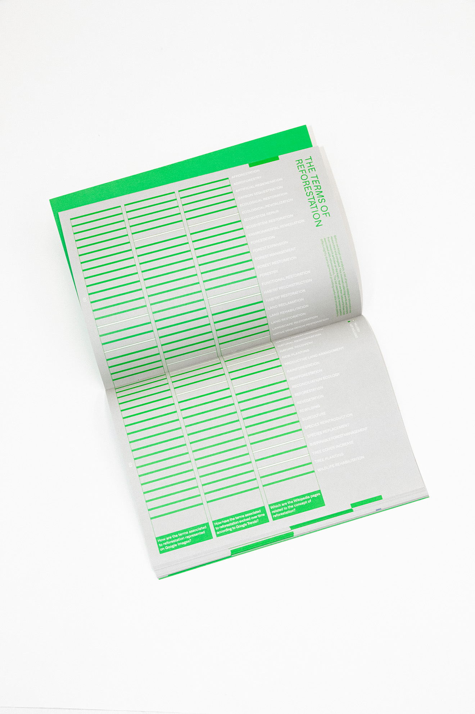

<!DOCTYPE html>
<html lang="en">
  <head>
    <meta charset="utf-8" />
    <meta name="viewport" content="width=device-width, initial-scale=1.0" />

    <title>Andrea Corsini - lost in the woods</title>
    <link rel="icon" type="image/x-icon" href="assets/favicon.png" />

    <link rel="stylesheet" href="style.css" />

    <script src="libraries/p5.min.js"></script>
  </head>
</html>
<body>
  <a id="titolone" href="index.html">andreacorsini.it</a>
  <a id="projects" href="javascript:window.open('','_self').close();">back</a>

  <div id="fascione"></div>

  <div id="totale">
    <div id="immagini">
      <div style="overflow: scroll">
        
        
        
        
        
        
        
      </div>
    </div>
    <div id="testi">
      <div id="testo">
        <span style="font-weight: 500; font-size: 2.5vh"
          >Lost in the Woods<br />an hike through the term surrounding
          reforestation</span
        ><br /><br />
        With the threat of climate change growing day by day, our responsibility
        to care for our planet is more important than ever. This is where
        reforestation comes into play. The topic is connected to a range of
        practices adapted to solving environmental problems, from restoring
        habitats to replanting acres of damaged woodland. <br />
        However, due to these varying methods, a branching canopy of terms
        emerges. The aim of this investigation is to determine how these
        practices are connected, their growth over time, and which factors
        affect our associations to them. To conduct this analysis, three
        platforms were mainly used, Wikipedia, Google Trends and Google Images,
        to collect data and build findings. <br />
        The following research expands on reforestation terms to find related
        topics using Wikipedia, allowing for the creation of network graphs
        which highlight connections and clusters between the data gathered.
        Google Trends was used to reveal the search trends of terms over time.
        <br />
        Their popularity and how it fluctuates is shown, along with events and
        patterns that cause these changes. By analysing Google Image results,
        the way terms are visually portrayed is investigated. This reveals usage
        of common tropes they share, or imagery unique to them.
        <br /><br />
        <a
          href="https://drive.google.com/file/d/11P-Z1yU2YQEHLJUK4av8nbnQIf6g6FG9/view?usp=share_link"
          style="text-decoration: underline; color: white"
          >Here you can read the report</a
        >
        <br /><br />
        <br />

        <span style="font-weight: 500; font-size: 2.5vh">Plant Forward</span
        ><br /><br />
        The website associated to the report refers to the question: "How are
        the terms associated with reforestation represented on Google Images?"
        and analyses the search results on Google mages from a dataset of 40
        terms belonging to the broad concept of reforestation. <br />
        The analysis focuses on the representation of reforestation and its
        growth process. It highlights an underrepresentation of the stages
        in-between initial planting to a fully grown forest, along with a minor
        human presence in them, which causes a loss of temporal cognition.
        <br />
        The project aims to encourage people to think about how the
        reforestation process is a long and gradual process that needs care and
        human intervention at every stage. It consists of two parts, the first
        is a scrollytelling that describes the research process and the starting
        point given by the report question, the second part is a web experience
        that allows you to explore the dataset of images visually sorted
        according to the growth of the trees represented.
        <br /><br />
        <a
          href="https://densitydesign.github.io/dd18-g3/"
          style="text-decoration: underline; color: white"
          >Here you can see the website</a
        >
        <br /><br />
        <span style="font-size: 1.5vh; padding-bottom: 5vh">
          in collaboration with:<br />
          Giulio Alessandrini<br />
          Alexandra Chiojdeanu<br />
          Greta Cozza<br />
          Miguel Gashi<br />
          Alessia Mattesini<br />
          Ana Muço<br />
        </span>
      </div>
    </div>
  </div>
</body>
